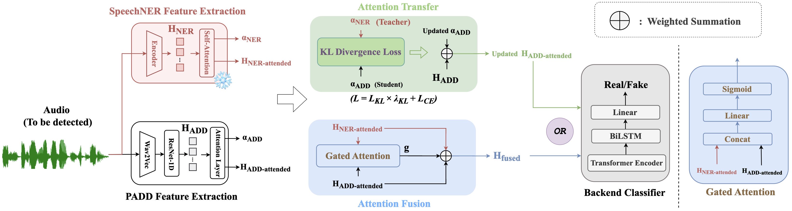

ABSTRACT
Different from traditional sentence-level audio deepfake detection (ADD), partial audio deepfake detection (PADD) requires frame-level positioning of the location of fake speech. While some progress has been made in this area, leveraging semantic information from audio, especially named entities, remains an underexplored aspect. To this end, we propose a novel method, NE-PADD, which leverages named entity knowledge for robust partial audio deepfake detection through attention aggregation. NE-PADD consists of two parallel branches: Speech Named Entity Recognition (SpeechNER) and PADD. Specifically, we introduce two attention aggregation mechanisms to help PADD models better understand named entity knowledge, thus achieving more robust PADD performance. (1) Attention Fusion (AF) combines attention from SpeechNER and PADD for more accurate weights. (2) Attention Transfer (AT) uses an auxiliary loss from their attention distributions to guide PADD in learning named entity semantics. We construct an appropriative PartialSpoof-NER dataset based on the existing PartialSpoof dataset and conduct a detailed comparative analysis of the two attention aggregation methods. Experiments demonstrate that our method exceeds all advanced baselines and demonstrates the effectiveness of fusing named entity knowledge during PADD. The code is available at
https://github.com/add-source/NE-PADD.
MODEL ARCHITECTURE

Figure: The architecture of our proposed model. The model architecture includes two feature extraction modules on the left, with the proposed attention fusion (AF) and attention transfer (AT) methods in the center, and the backend classifier on the right.
PartialSpoof-NER Dataset
| Text | Speech |
|---|---|
| What type of music do you like to listen to? | |
| I like listening to different kinds of music. | |
| Like what, for instance? | |
| I enjoy Rock and R&B. | |
| Why is that? | |
| I like the different instruments that they use. |